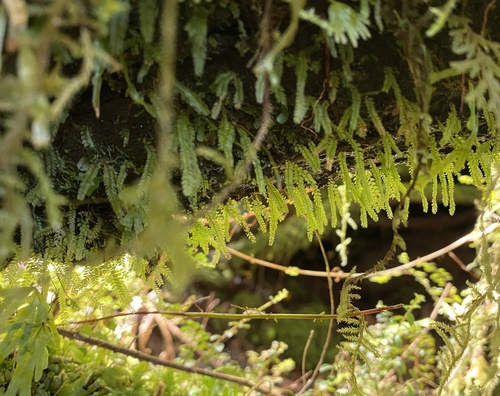

Mitteniaceae
Goblin Gold Moss / Luminous Moss Family
Mitteniaceae is a unique, essentially monotypic moss family (containing only the genus Mittenia) famous for its remarkable luminous protonema. Unlike most mosses where the leafy gametophyte is dominant, in Mitteniaceae, the persistent protonemal stage creates a distinctive greenish glow in dimly lit, damp environments like cave entrances, rock overhangs, and tree root hollows. The leafy gametophytes are small and often ephemeral.
Overview
The Mitteniaceae family, containing only the genus Mittenia with one or two species (M. plumula often being the sole recognized species), holds a unique place in the bryophyte world due to its life cycle dominated by a specialized protonema. This family is placed in its own order, Mitteniales, highlighting its evolutionary distinctiveness.
The defining characteristic is the protonema, the filamentous stage that grows from the spore. In Mittenia, this stage persists and possesses specialized, lens-shaped cells. These cells focus incoming dim light onto the chloroplasts located at the back of the cell, and the reflected light causes the protonema to glow with an eerie greenish light, hence the common names "Goblin Gold" or "Luminous Moss." This adaptation allows the moss to thrive in extremely low-light conditions where other plants cannot photosynthesize effectively.
The leafy gametophytes that arise from this protonema are very small, often resembling tiny buds or developing only a few small leaves, and are relatively short-lived compared to the persistent protonema. Sporophytes are produced rarely. The family has a disjunct distribution, found in scattered locations across temperate regions of the Northern Hemisphere (Eastern North America, Europe, Japan).
Quick Facts
- Scientific Name: Mitteniaceae
- Common Name: Goblin Gold Moss, Luminous Moss Family
- Number of Genera: 1 (Mittenia)
- Number of Species: 1 (or 2)
- Distribution: Disjunct temperate Northern Hemisphere (E North America, Europe, Japan) in shaded, damp habitats.
- Evolutionary Group: Bryophytes - Mosses - Mitteniales
Key Characteristics (Moss Morphology)
Protonema: The Dominant Stage
The most significant part of the life cycle. It is persistent, filamentous, and luminous. It consists of branching threads but includes highly specialized, large, globose or lens-shaped cells. These cells act like lenses, concentrating faint light onto chloroplasts clustered at the cell's posterior wall. The reflection of this concentrated light causes the characteristic greenish glow visible when looking back towards the light source in a dark environment. The protonema spreads over damp soil, rock, or decaying wood in shaded crevices.
Gametophyte: Growth Form and Habit
Plants are acrocarpous but highly reduced and often ephemeral. They arise as small buds or develop into tiny, erect stems (typically only a few millimeters tall) from the persistent protonema. They do not form extensive tufts or mats like typical acrocarpous mosses.
Gametophyte: Stems
Stems are very short and simple.
Gametophyte: Leaves
Leaves are few, small, arranged sparsely on the stem, often ovate to lanceolate. They lack the specialized structure of the protonemal cells. The costa is typically absent or very weak and short.
Sporophyte: Seta, Capsule, and Peristome
Sporophytes are produced rarely. Sexual condition is dioicous or autoicous. The seta is relatively long and slender, smooth. The capsule is small, erect or slightly inclined, symmetrical, and typically pyriform (pear-shaped) to ovoid. The operculum is conical or shortly rostrate. The peristome is single (haplolepidous), consisting of 16 lanceolate teeth, which are often fragile and pale.
Field Identification (Mosses)
Identifying Mitteniaceae is almost entirely based on finding its unique protonema in the right habitat:
Primary Identification Features (Field/Hand Lens)
- Luminous Protonema: The key feature – look for a greenish, gold, or emerald glow emanating from dark, damp crevices when viewed from the direction of the light source (often requires dim conditions and looking back towards the opening of the crevice/cave).
- Habitat: Highly specific – shaded, damp, sheltered places like cave entrances, deep rock crevices, under overhangs, spaces between tree roots, animal burrows. Usually on mineral soil or sandstone.
- Appearance of Protonema: Looks like a fine, velvety or felt-like greenish layer on the substrate.
- Gametophytes: Tiny, bud-like or small leafy shoots arising from the glowing protonema (easily missed or absent).
Secondary Identification Features (Microscope often needed)
- Protonemal Cell Structure: Confirmation of the large, lens-shaped cells under a microscope.
- Gametophyte Leaves: Small size, lack of costa.
- Sporophyte Features: Long seta, pyriform capsule, single peristome (if found, which is rare).
Common Confusion Points
- Algae: Some green algae form films in similar habitats but do not exhibit the focused, reflective glow of Mittenia protonema.
- Liverwort Protonemata/Thalli: Some thalloid liverworts or liverwort protonemata can grow in damp shade but lack the characteristic luminescence.
- Schistostega pennata (another "Luminous Moss"): Belongs to a different family (Schistostegaceae) and order. Its protonema is also luminous due to lens-cells, but the cells are shaped differently, and the leafy gametophytes are more developed, frond-like, and distichously arranged (leaves in two ranks). Habitat is similar.
- Fungal Mycelia/Bioluminescence: Some fungi are bioluminescent, but the glow is typically bluish or whitish and chemically produced (bioluminescence), not a reflection like in Mittenia.
Field Guide Quick Reference (Mosses)
Look For:
- Greenish glow from dark crevices
- Habitat: Caves, overhangs, root hollows
- Persistent, velvety protonema
- Tiny, ephemeral leafy shoots (if present)
Key Variations:
- Intensity of glow (depends on light/moisture)
- Presence/absence of gametophytes/sporophytes
Notable Genera
This family is essentially monotypic:

Mittenia
Goblin Gold / Luminous Moss (Genus)
The sole genus in the family. Contains one widespread species, M. plumula (sometimes split). Defined by its persistent, luminous protonema with lens-shaped cells, adapted to extremely low light levels in damp, shaded habitats. Gametophytes are minute and ephemeral; sporophytes are rare.
Phylogeny and Classification
Mitteniaceae occupies an isolated position within the Bryopsida class and is placed in its own order, Mitteniales. Its evolutionary relationships to other moss orders are uncertain and have been debated. Morphological features (like the haplolepidous peristome) and molecular data have suggested potential distant links to orders like Bryales or Rhizogoniales, but it does not fit comfortably within any other existing order.
The most significant evolutionary aspect of Mitteniaceae is the extreme adaptation of its protonemal stage. The development of specialized lens-cells represents a unique strategy for survival in deep shade, maximizing the capture and utilization of very low levels of light. This makes the protonema the dominant and persistent phase of the life cycle, a reversal of the typical moss pattern where the leafy gametophyte is dominant.
Position in Plant Phylogeny
- Kingdom: Plantae
- Division: Bryophyta (Mosses)
- Class: Bryopsida
- Order: Mitteniales
- Family: Mitteniaceae
Evolutionary Significance
The Mitteniaceae family is highly significant for representing:
- Extreme Niche Specialization: A remarkable adaptation to survival in very low-light environments.
- Unique Protonemal Adaptation: The evolution of lens-shaped protonemal cells for light focusing is a unique feature among mosses (shared convergently only by Schistostega).
- Life Cycle Modification: Dominance of the protonemal stage over the highly reduced gametophyte stage.
- Isolated Lineage: Represents a distinct and ancient evolutionary branch within the mosses, highlighting the diversity of life strategies evolved in this group.